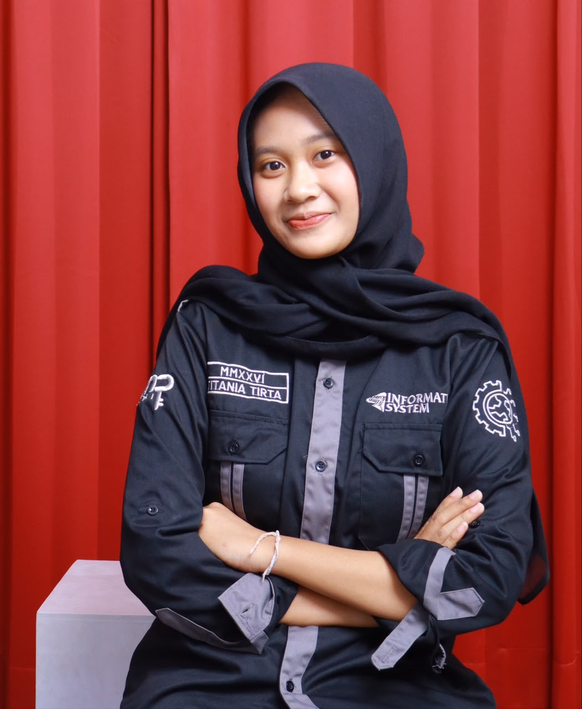
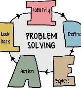
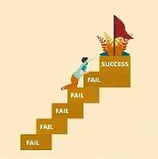

Halo, saya Titania Seorang Programer. Fokus utamaku mengubah logika dengan data jadi solusi digital—mulai dari codingan web, olah data komputasi pakai Python, sampai arsitektur sistem logistik.

Bagaimana seorang programmer memecahkan masalah kompleks dan membangun ekosistem digital.

Keahlian utama seorang programmer terletak pada problem solving. Saya tidak sekadar menulis baris kode, tetapi menganalisis masalah kompleks, memecahnya menjadi bagian-bagian kecil, dan menyusun algoritma yang efisien agar komputer dapat mengeksekusi solusi dengan presisi tinggi.
Di balik aplikasi yang stabil terdapat arsitektur dan komputasi yang matang. Saya mengelola struktur basis data, menganalisis efisiensi algoritma, dan merancang aliran data yang terintegrasi agar aplikasi tetap responsif, aman, serta siap menangani beban skala besar.
Satu indikator keberhasilan utama programmer adalah ketika sistem backend yang rumit berhasil diterjemahkan menjadi antarmuka yang bersih, responsif, dan intuitif. Aplikasi tidak hanya canggih secara logika, tetapi juga nyaman dan mudah digunakan oleh siapapun.
Perjalanan awal saya di dunia pemrograman dimulai dari pemecahan masalah nyata. Saya memanfaatkan Python untuk membangun algoritma skoring dan normalisasi data komputasi, yang digunakan untuk mengolah kriteria kondisi fisik, volume lalu lintas, dan estimasi biaya guna menentukan prioritas perbaikan jalan secara objektif..
Di tahap pengasahan skill ini, saya melangkah dari pemrosesan data murni menuju pengembangan aplikasi web interaktif. Saya merancang sistem inventaris dan transaksi logistik terstruktur untuk mengelola pencatatan stok, alur masuk-keluar barang, serta rantai pasok secara real-time dan intuitif.

Puncak pencapaian saya sebagai programmer ditandai dengan kemampuan merancang arsitektur sistem logistik yang kompleks. Saya menghubungkan berbagai titik alur data—mulai dari ketersediaan stok, pelacakan armada, hingga distribusi akhir—ke dalam satu ekosistem digital yang efisien, terintegrasi, dan siap berkembang
Punya pertanyaan atau ingin berkolaborasi?